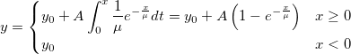

Exponential cumulative distribution function
Number: 3
Names: y0, A, mu
Meanings: y0 = offset, A = Anplitude, R0 = rean
Lower Bounds: A > 0, mu > 0
Upper Bounds: none
Standard Deviation: sigma=mu
FITFUNC\ExponentialCDF.fdf
Statistics, Baseline, Exponential